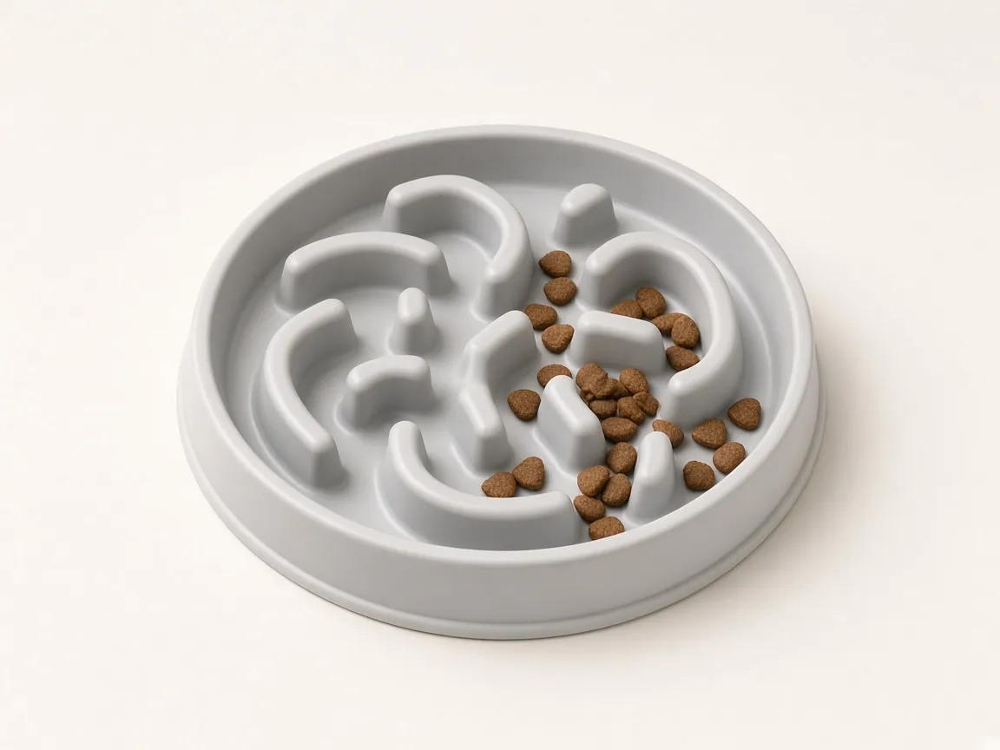
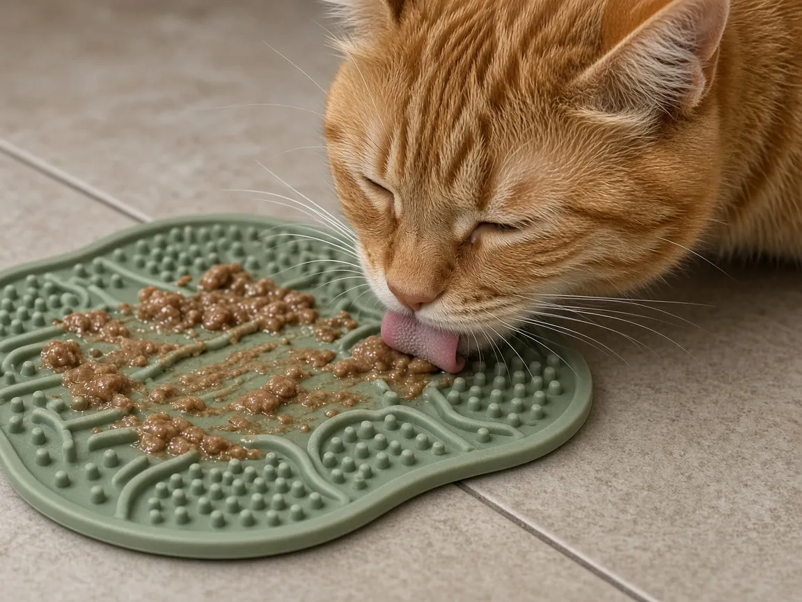
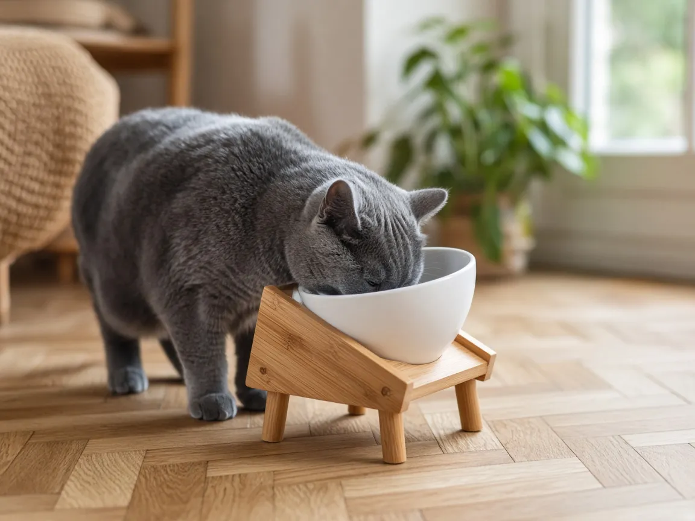

Gamelle anti-glouton pour chat : laquelle choisir en appartement ?

Ton chat avale sa gamelle en trente secondes puis réclame encore ? En appartement, où il se dépense moins qu’un chat qui sort, le repas devient souvent le grand moment de la journée. Une gamelle anti-glouton ralentit le rythme, transforme le repas en petit jeu de fouille et occupe ton chat un peu plus longtemps. Voici trois types de gamelles utiles et comment choisir la bonne.
Comment choisir une gamelle anti-glouton
- Le type de nourriture : les reliefs en labyrinthe conviennent bien aux croquettes, le tapis de léchage est fait pour la pâtée ou les mousses.
- La difficulté : commence par un modèle simple, avec des reliefs peu profonds. Un chat qui n’arrive pas à manger se décourage vite.
- Le matériau : céramique ou inox pour la solidité, silicone ou plastique alimentaire sans BPA pour la légèreté. Vérifie que la gamelle passe au lave-vaisselle.
- La stabilité : une base antidérapante ou un set en silicone évite que la gamelle glisse sur le carrelage ou le parquet.
1. La gamelle labyrinthe pour croquettes

Le classique pour ralentir les repas
Les reliefs obligent ton chat à aller chercher les croquettes une par une avec la langue ou la patte. Le repas dure plus longtemps et devient une petite activité, ce qui est appréciable pour un chat d’intérieur qui s’ennuie entre deux siestes. Choisis une gamelle large et peu profonde pour que ses moustaches ne frottent pas sur les bords, avec des reliefs arrondis faciles à nettoyer.
Voir sur Amazon : gamelles anti-glouton2. Le tapis de léchage pour pâtée

L’option douce pour la nourriture humide
Un tapis en silicone couvert de picots et de rainures, sur lequel tu étales la pâtée. Ton chat lèche tranquillement et prend son temps. C’est aussi une bonne occupation à proposer quand tu pars quelques heures ou pendant un moment stressant, comme l’arrivée d’invités. Prends un modèle avec ventouses ou base lestée, et passe-le au lave-vaisselle après chaque utilisation.
Voir sur Amazon : tapis de léchage3. La gamelle surélevée inclinée

Le confort de posture au moment du repas
Ce n’est pas une gamelle anti-glouton au sens strict, mais elle complète bien les deux autres. Surélevée et légèrement inclinée, elle place la nourriture à une hauteur plus confortable et rassemble les croquettes vers l’avant. Certains chats mangent ainsi plus posément. La céramique est lourde, donc stable, et le support en bambou s’intègre bien dans une cuisine ou un salon.
Voir sur Amazon : gamelles surélevéesQuelle gamelle pour quel chat ?
| Situation | Gamelle conseillée | Point d’attention |
|---|---|---|
| Chat qui avale ses croquettes trop vite | Gamelle labyrinthe | Reliefs simples au début |
| Chat nourri à la pâtée | Tapis de léchage | Nettoyage après chaque repas |
| Chat âgé ou grand gabarit | Gamelle surélevée inclinée | Hauteur adaptée à sa taille |
| Chat qui s’ennuie seul la journée | Gamelle labyrinthe ou tapis de léchage | Varier pour garder l’intérêt |
Nos astuces pour bien démarrer
- Introduis la nouvelle gamelle progressivement : mets d’abord une partie de la ration dedans, le reste dans l’ancienne.
- Garde la gamelle d’eau à part, loin de la nourriture : beaucoup de chats boivent davantage ainsi. Pour aller plus loin, vois notre guide des fontaines à eau pour chat.
- Place la gamelle dans un endroit calme, loin de la litière et des passages.
- Si tu distribues les repas à heures fixes en ton absence, un distributeur de croquettes connecté peut compléter la gamelle anti-glouton.
- Si ton chat vomit souvent après ses repas ou change d’appétit, demande conseil à ton vétérinaire : une gamelle ne remplace pas un avis professionnel.
FAQ
Une gamelle anti-glouton convient-elle à tous les chats ?
La plupart des chats s’y habituent, à condition de commencer par un modèle facile. Un chat âgé ou qui a des difficultés à manger peut préférer une gamelle classique ou surélevée. Observe-le les premiers jours.
Mon chat n’arrive pas à manger dans sa gamelle labyrinthe, que faire ?
Choisis un modèle avec des reliefs moins hauts ou plus espacés, ou remplis la gamelle au-dessus des reliefs au début. Tu peux aussi alterner avec son ancienne gamelle le temps qu’il comprenne le principe.
Peut-on mettre de la pâtée dans une gamelle labyrinthe ?
Oui, mais le nettoyage est plus fastidieux. Pour la nourriture humide, un tapis de léchage est souvent plus pratique et se lave plus facilement.
Comment nettoyer une gamelle anti-glouton ?
Rince-la après chaque repas et lave-la régulièrement à l’eau chaude savonneuse ou au lave-vaisselle si le fabricant l’autorise. Une petite brosse aide à atteindre le fond des reliefs.
Quel budget prévoir ?
Une gamelle labyrinthe ou un tapis de léchage se trouvent souvent pour une dizaine d’euros, une gamelle surélevée en céramique un peu plus. Les prix changent souvent, vérifie-les sur la page du vendeur.
Notre avis
Pour un chat qui dévore ses croquettes, la gamelle labyrinthe est le choix le plus simple et le plus efficace. Si ton chat mange surtout de la pâtée, le tapis de léchage est plus pratique au quotidien. La gamelle surélevée inclinée apporte un vrai confort aux chats âgés ou de grand gabarit. Pour compléter son coin repas et son équipement, vois notre guide de l’équipement du chat en appartement.
Liens affiliés Amazon : une commission peut être versée, sans surcoût pour toi.